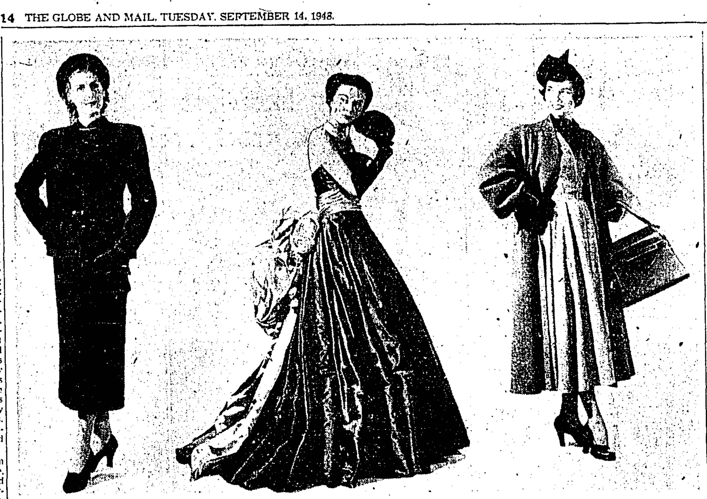

Croquis de presse
Collection Dior Héritage, Paris


Charte
Toutes les chartes mentionnaient les modèles de chaque collection par catégorie, le nom des personnes les ayant réalisés, le nom des mannequins, et comprenaient des échantillons de tissu. On pouvait ainsi répartir équitablement le travil dans les ateliers et les mannequins avaient le temps de se changer lors des présentations quotidiennes.
Collection Dior Héritage, Paris

Présenté dans la revue de la mode d’automne de Simpson :
Christian Dior demeure le maître des créations basculées en arrière avec sa robe en taffetas noir à rayures argentées (au centre) et son pouf retenu par une cascade de roses fanées. Les hanches sont légèrement arrondies et la taille resserrée.
The Globe and Mail, 14 septembre 1948
© 2017 The Globe and Mail Inc.